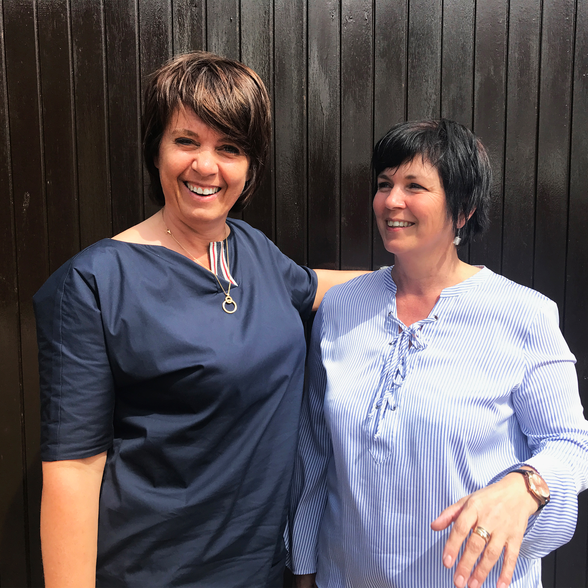

Artiesten
Den Benny

Onze eerste artiest is “Den Benny”. Hij is 35 jaar en afkomstig uit Gent. De muzikale wereld ligt hem wel, al sinds zijn vijf speelt hij saxofoon en ook in zijn vrije tijd houdt hij ervan om piano te spelen en te zingen. Hij zal de labelnight voor jullie openen!
Aniet & Patrice
Onze volgende artiesten zijn een duo! Deze twee zussen zijn onafscheidelijk en delen heel veel dezelfde passies met elkaar. Deze gaan van samen taart bakken, tot fietsen in het park en natuurlijk ook het muzikale aspect: zingen in het koor. Deze twee sympathieke dames zal je ook leren kennen op zaterdag 19 augustus en ze kijken er al heel hard naar uit!
Joost Appelbol
Als derde artiest hebben we opnieuw een mannelijke zanger: Joost Appelbol! We horen jullie al denken “wat een naam is dat?”, een nieuwe artiest moet natuurlijk origineel zijn met zijn artiestennaam, want anders springt hij er niet meer uit met al deze talenten tegenwoordig. En zeg nu zelf, blijft deze naam niet geweldig goed hangen? Ook Joost heeft al enige ervaring in de muziekwereld en heeft samen met wat vrienden een bandje. De laatste jaren heeft hij het genre levenslied leren kennen, wat hem helemaal ligt! Ook hij staat al te popelen om zijn nieuwe album aan jullie voor te stellen!
Rosanna de Vries

Onze laatste artiest is Rosanna de Vries! Deze liefdevolle dame heeft nog nooit eerder op een podium gestaan, maar dat wil niet zeggen dat ze onder moet doen voor onze andere artiesten! Want talent heeft ze zeker en vast wel. Rosanna zal voor jullie de labelnight afsluiten met haar nieuwe liedjes, die jullie ongetwijfeld zullen smaken!